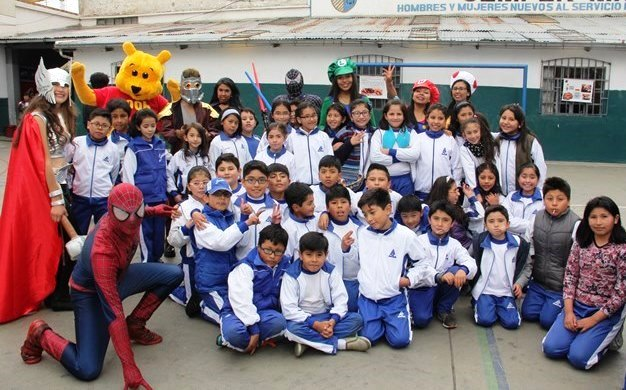
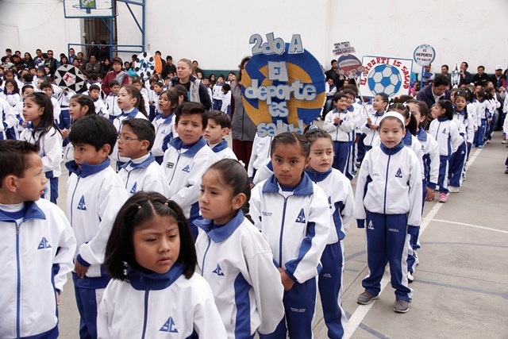

134 años de vida del colegio MARISCAL ANTONIO JOSE DE SUCRE, cumpliendo los preceptos de brindar una formación integral, basada en valores, principios cristianos y humanos, seguimos en la permanente búsqueda de la excelencia humana y académica de nuestros estudiantes.
Actividades.:

Actualidad.: |
|
 |
|
"Consagración a la Virgen María" ........................................................................... |
 |
Inauguración del "Año Deportivo 2016" ........................................................................... |
Comunidad.:
Tenemos el agrado de invitarl@s a la: PRESENTACIÓN DE GIMNASIA (1er CICLO) Acto que se llevará a cabo, el día sábado 20 de Agosto del presente, en el patio de primaria, colegio Mariscal Antonio Jose de Sucre. hrs. 08:30 Turno Mañana; hrs. 11:00 Turno Tarde Agradecemos su gentil concurrencia. |
 |